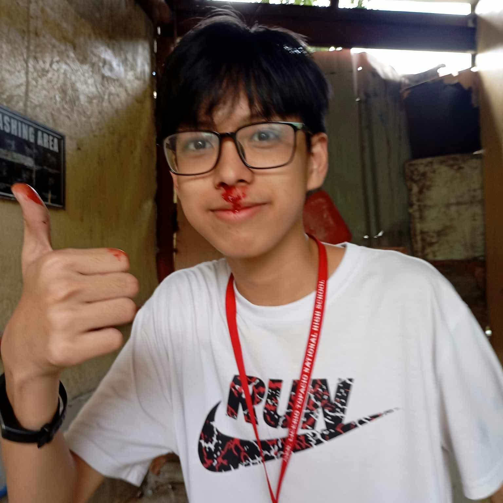
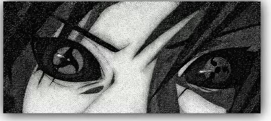
My junior high school life was a memorable part of my life. It was a time when I learned many new things, met different people, and experienced both good and difficult moments. Ang high school ang isa sa pinaka-masayang experience na naranasan ko. Dito ko nakilala ang mga kaibigan ko na naging kasama ko sa maraming masasaya at mahihirap na moments. Marami rin akong bagong bagay na natutunan na dati ay hindi ko alam. May mga kaibigan ako na Bisaya, sigma, at may mga kaibigan din ako na parang kuya at tatay na sa akin. Pero dumating ang graduation day, ang araw kung saan kailangan na naming magkahiwa-hiwalay at sundin ang kanya-kanya naming mga pangarap. Masaya ako dahil nakamit namin ang aming mga pinaghirapan, pero may lungkot din dahil hindi na kami magkakasama tulad ng dati. Hindi ko makakalimutan ang mga masasayang alaala, tawanan, at mga pagsubok na pinagdaanan namin bilang magkakaibigan. Kahit magkahiwalay na kami, dadalhin ko ang mga alaala at aral na natutunan ko kasama sila.
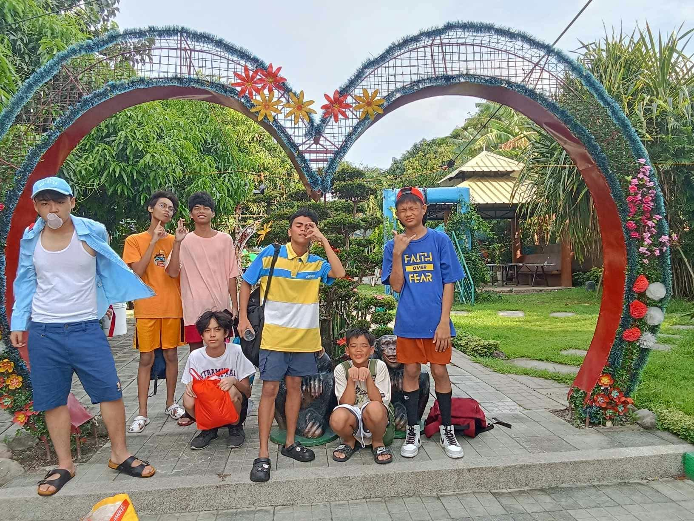
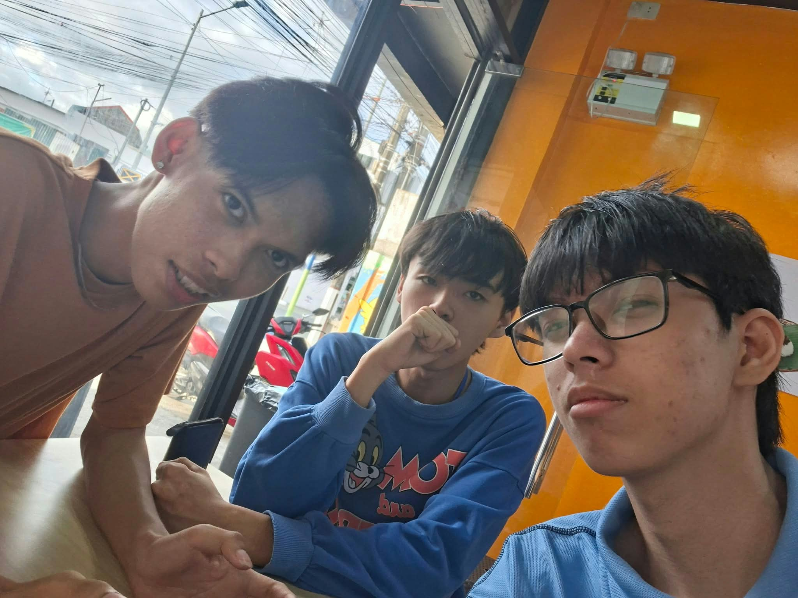
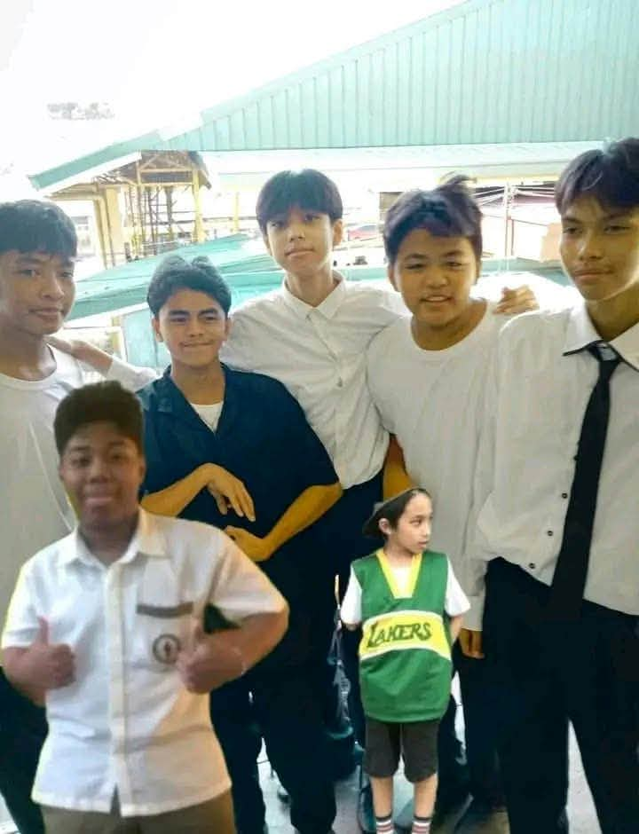
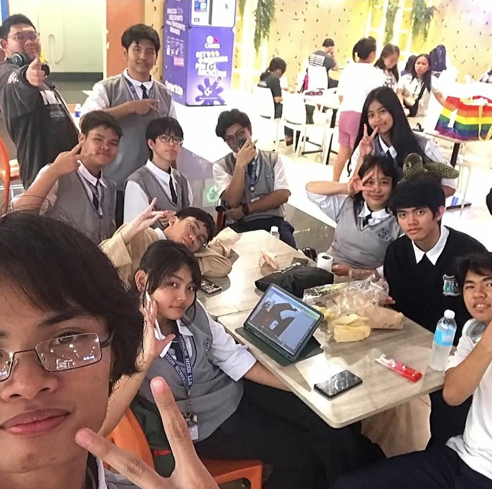
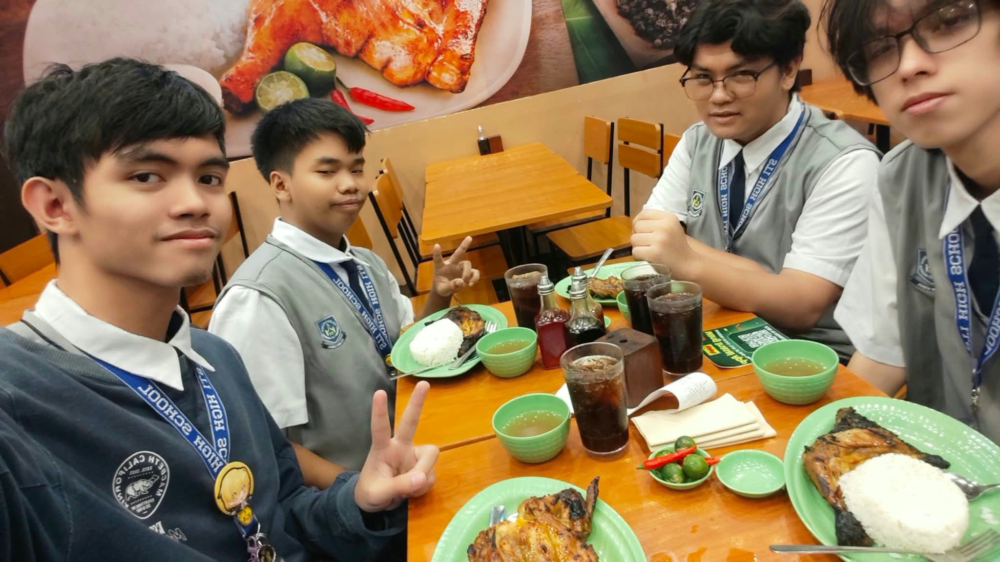
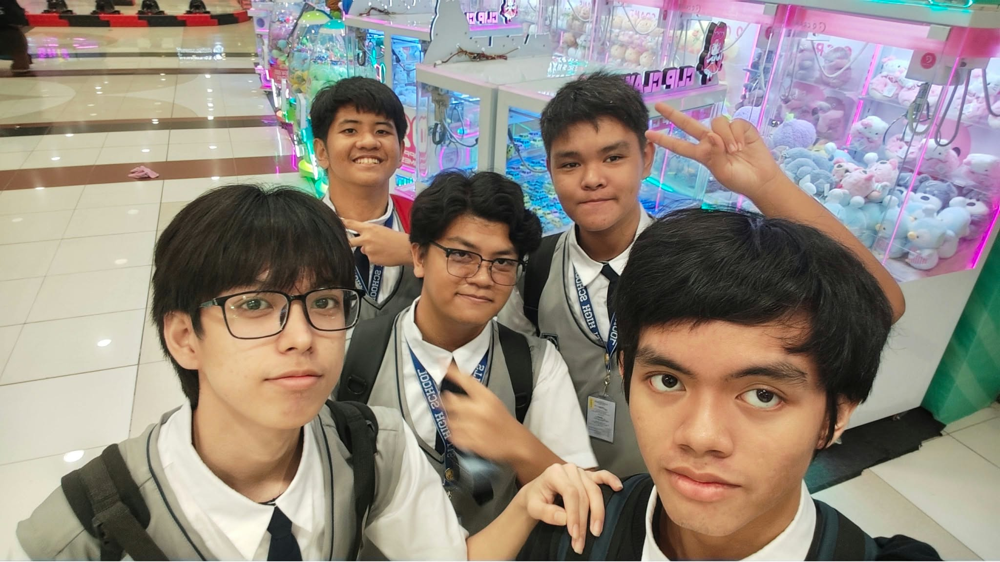
Grade 11 na ako at kakasimula lang ng senior high school journey ko. I met new classmates, teachers, and people who became part of my journey. At first, I was a little nervous because I knew that senior high school would be more challenging than before. But as time passed, I started to enjoy it and learn new things. I also made new friends and experienced many memorable moments with them. Ang babait at super chill ng mga bago kong teachers kumpara sa junior high school days ko. Lalo na ang mga bago kong kaibigan. Wala pa akong masyadong makukwento dito kasi kakasimula pa lang ng senior high school journey ko oki bye ano jay weng weng weng ambatukammmmm.
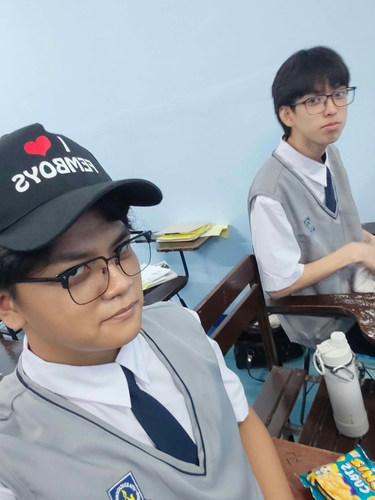
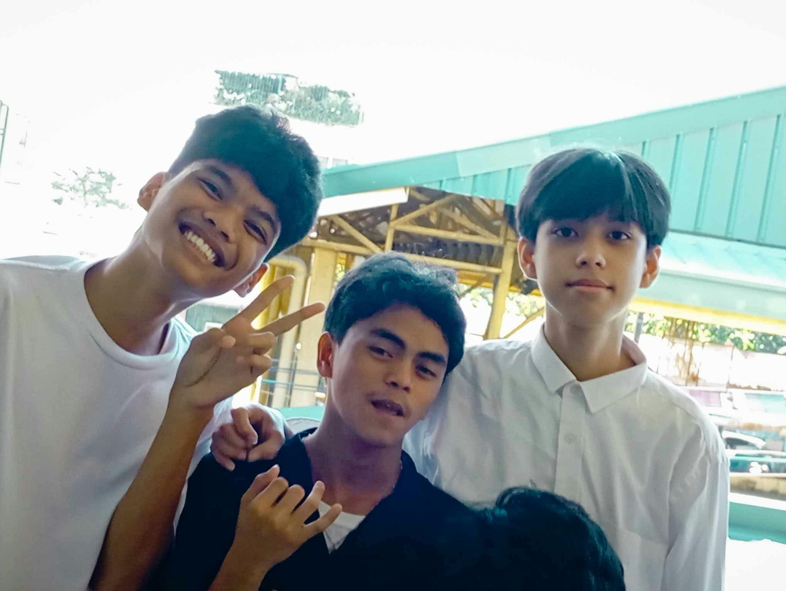
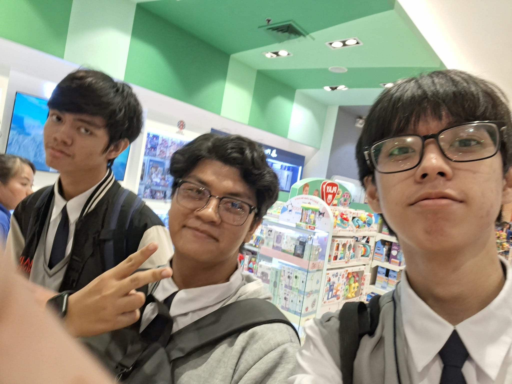
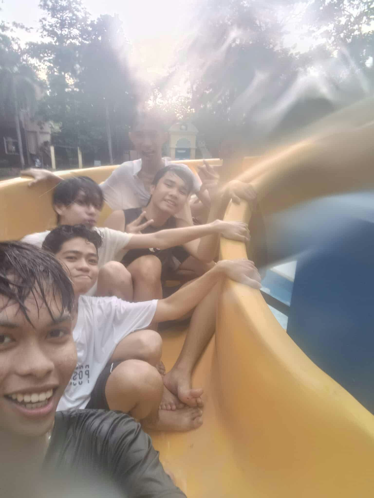
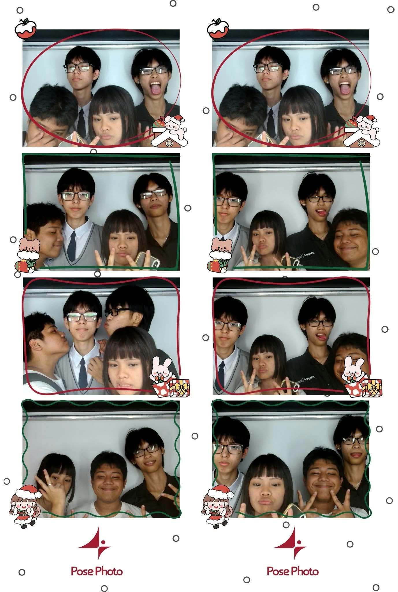